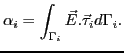

Solving Maxwell equations using multigrid method is a well known problem, and many approaches and solvers have been explored. In this talk, we describe a specific methodology for solving large linear systems arising from Maxwell equations discretized with first-order Nédélec elements. Using this methodology, a new parallel solver is developed. This solver combines the PaStiX parallel direct solver and full multigrid cycles. The goal of this proposed method is to compute the solution for problems defined on fine irregular meshes with minimal overhead costs when compared to the cost of applying a classical direct solver on the coarse mesh.
The PaStiX direct solver can handle linear systems with up to 100 million unknowns, but this size is limited by the computer memory, so that finer problem resolutions that often occur in practice cannot be handled by this direct solver. The aim of the new method is to provide a way to solve problems with up to 1 billion unknowns, given an input mesh with up to 100 million unknowns. The input mesh is used as the initial coarsest grid. Fine meshes, where only smoothing sweeps are performed, will be generated automatically. Such large problem size can be solved because the matrix is assembled only on the coarsest mesh, while on the finer meshes, multigrid cycles are performed matrix-free.
The problem is defined on a 3D domain, which might be a subdomain extracted from a physical domain using a domain decomposition technique. There are two types of boundaries, giving rise to two types of boundary conditions, an impedance condition on the inner, material interface and a transmission condition on the outer interface.
In order to solve the differential equations, we use a tetrahedral
Nédélec finite element discretization, leading to an irregular 3D
mesh. These elements are
edge-based, with the unknowns defined on the edges. These edge values
represent the electric field circulation along an oriented edge
with unit tangential vector
, and they are
computed in each element with the formula
|  |
With these components, we can show that mesh refinement is numerically simple, and two regular refinement methods can be used. The first refinement method uses the gravity center as a new vertex, creating 4 new tetrahedrons. The new edge values, computed using Nédélec basis functions, are simply weighted sums of the coarser edge values, which are not modified by this refinement procedure. The second method splits each tetrahedron edge. As a consequence, the coarsening phase for this second method is more complicated and may require more memory storage to keep vectors on all mesh levels. Furthermore, in this second method, for each coarse tetrahedron, 8 new ones are created, which means that problem size grows fast on each refinement level. Because of this growth, we use the first refinement method.
The first step of our method is to solve the problem on the coarsest input mesh using the PaStiX parallel direct solver. On this coarsest level, the system is formed by assembling the global matrix using the elementary matrices. This complex but symmetric matrix is then factorized and solved. Next, the computed solution is prolongated onto a finer mesh using the technique described above. On this finer mesh, a multigrid V-cycle is used to damp out the interpolation error and capture fine-scale solution features.
Choosing the smoother in the V-cycle is crucial. Such method must smooth the error in a few sweeps, and must also be efficient and parallelizable. Moreover, in order to be matrix-free, the smoother must be realized using only matrix-vector products. Currently, we plan to use Gauss-Jacobi type smoothers.
Since the input is the coarsest mesh, the depth of the multigrid cycle is determined by this original mesh level. In the V-cycle, once the coarsest refinement level is reached, a direct solve is performed using the factorized matrix already computed. As a consequence, solving the coarsest level system requires only a forward-backward solve phase. Naturally, reaching this coarse level is not always necessary if the desired accuracy has already been attained.
The main advantage of this method is that the coarsest level matrix only needs to be assembled, and its factorization is done only once (since we use a regular refinement procedure, the coarsest level matrix is unchanged). Factorization performed by the first PaStiX invocation can be viewed as a preprocessing stage, piloting the parallel aspects of the solution phase by distributing the matrix and elements over processors. All solves after the parallel factorization are performed with a complexity equivalent to a forward-backward solve, which is highly dependent on the renumbering of the unknowns performed before the factorization.
Another advantage of this method is related to the mesh. In classical Maxwell problems, the mesh must meet two requirements. It must physically describe the problem and it must satisfy a wavelength restriction that ensures that elements are small enough to capture the applied wavelength. In this approach, the input mesh must fulfill the first requirement, while the second one only applies to the fine mesh and is progressively ensured by successive refinements. From this specificity arises one main advantage of this method. Studying a given object at increasing high frequencies requires a unique initial mesh describing problem geometry while wavelength requirements are met by using deeper V-cycles.